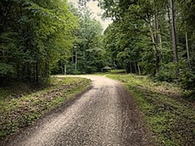
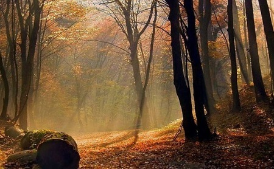

Trójmiejski Park Krajobrazowy
30.12.2019 | 19:34:39 | MM
Trójmiejski Park Krajobrazowy (kaszb. Trzëmiejsczi Park Krajòbrazny) – park krajobrazowy o powierzchni 19 930 ha położony w woj. pomorskim[2]. Rozciąga się na północno-wschodnim fragmencie wysoczyzny morenowej Pojezierza Kaszubskiego, obejmując tereny leśne (90% powierzchni) z enklawami rolniczymi wsi Gniewowo, Zbychowo, Nowy Dwór Wejherowski, Reszki i Bieszkowice. Park obejmuje część terenów Gdyni, Rumi, Szemudu i Wejherowa oraz fragmenty terenów Sopotu i Gdańska. Park posiada otulinę o powierzchni 16 542 ha[2]. Lasy wchodzące w skład TPK są, z wyjątkiem rezerwatów przyrody lasami gospodarczymi i zarządzane są przez Nadleśnictwo Gdańsk.

Historia
Trójmiejski Park Krajobrazowy został utworzony 3 maja 1979 Uchwałą Wojewódzkiej Rady Narodowej w Gdańsku. Według tej uchwały powierzchnia parku wynosiła 20 104 ha. Dwukrotnie zmieniano powierzchnię parku. W 1994 (z mocą od 1995) zwiększono powierzchnię do 20 312 ha (m.in. poprzez włączenie lasów na południe od ul. Słowackiego, a także lasów komunalnych) i wyznaczono po 15 latach funkcjonowania jego otulinę. W 1998 wydzielono z terenów TPK śródleśną enklawę wsi Łężyce, co doprowadziło do zmniejszenia powierzchni do 19 930 ha[1].

Byłeś już w Gdańsku? Podziel się swoimi doznaniami z innymi!
Marysia | 10.03.2019 | 19:39:01 Byłam polecam z całego serca!!
Papież | 10.03.2019 | 19:40:00 Było super
Komentarze czytelników